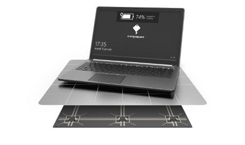
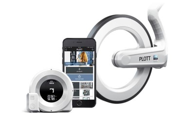
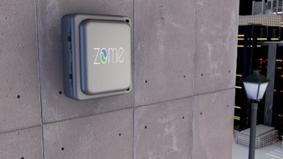
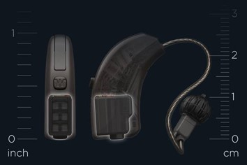
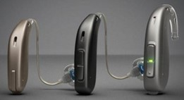
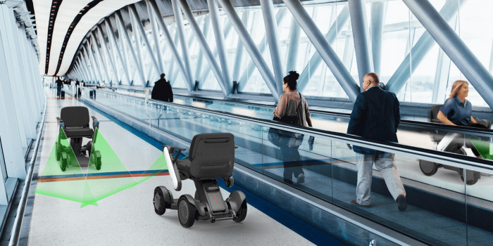

Cargador universal para portátiles

La compañía Energysquare ha desarrollado un cargador inalámbrico universal para
ordenadores portátiles. Para ello, se han basado en Power by contact, su tecnología
de carga conductora patentada. Una carga rápida y potente sin ondas electromagnéticas.
PLOTT

PLOTT ha sido el vencedor en la categoría ”Realidad Virtual/ Realidad Aumentada”. Esta
plataforma permite diseñar en Realidad Aumentada con dimensiones y vídeos del mundo real.
Esta característica convierte a PLOTT en ideal para tareas de bricolaje. De este modo, el
usuario puede ver cómo quedaría algo nuevo en su salón sin necesidad de hacer cambios en
la vida real.
Una vez decidas los cambios a realizar, PLOTT cuenta con hardware para llevarlo a la realidad
paso a paso y eliminando la necesidad de realizar cálculos matemáticos.
ZOMEKit

ZOMEKit es un dispositivo que convierte los complejos de apartamentos en edificios
inteligentes. Este producto logra ahorrar energía e incluso producir ingresos.
ZOMEKit transforma los termostatos y aparatos en dispositivos de energía transactiva.
El primer audífono sin batería

La nueva tecnología Widex Energy Cell ha dado lugar a la creación del primer audífono
sin batería del mundo. Desde Widex aseguran que emplean la celda de combustible más
pequeña del mundo disponible comercialmente. Así, el usuario puede energizar sus
audífonos en tan solo 20 segundos y sin necesidad de cables o baterías. La autonomía
es de 24 horas y también se ofrece un audio de excelente calidad.
El primer asistente auditivo del mundo

KAIZN es el primer asistente personal de IA del mundo que se centra en la audición.
Éste aprende constantemente sobre los comportamientos y necesidades de audición;
además de las preferencias de sonido de los usuarios. Con el paso del tiempo será
capaz de optimizar automáticamente la configuración del sonido que más se ajuste
a cada usuario.
Conducción autónoma de WHILL

WHILL ha logrado alzarse como vencedor de la categoría ”Accesibilidad”. En este sentido,
la compañía cuenta con vehículos personales autónomos; una especie de silla de ruedas,
pero que es capaz de conducirse a sí misma. Así, se logra facilitar la vida a personas
con discapacidades que dificultan su movilidad.
Los vehículos personales autónomos de WHILL están pensados para utilizarse como MaaS o
movilidad como servicio. En este sentido, la empresa piensa que los hospitales,
aeropuertos, museos o centros comerciales son los lugares idóneos para su uso
Ir aquí para ver más...